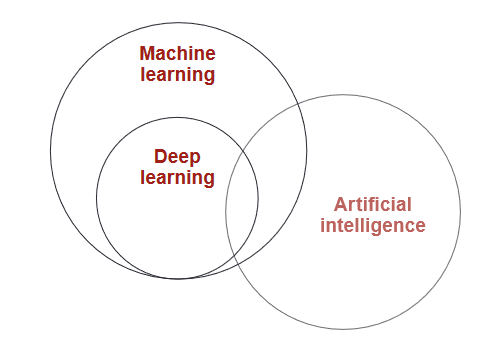
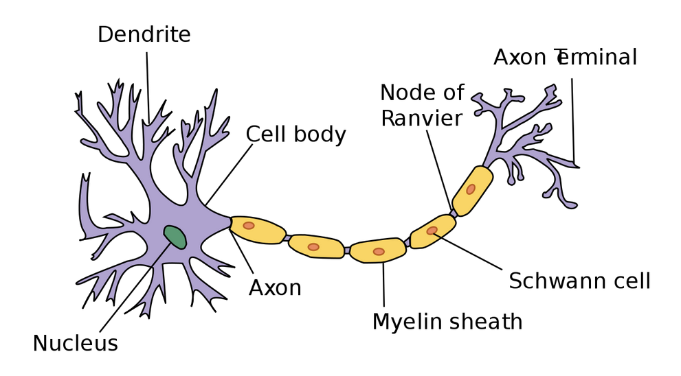
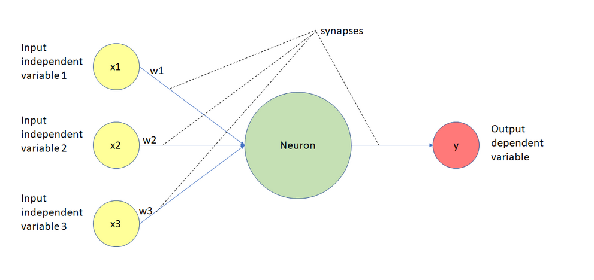

Okay, let’s get real for a moment. Over the last few days, we powered through the essentials, laying the groundwork for understanding AI’s inner workings. You’re probably feeling a mix of curiosity and, let’s be honest, slight terror. And that’s okay! Because today, we’re taking a leap forward into the magical, mysterious world of Artificial Neural Networks (ANNs).
But before we dive in, let me ask you this: ever tried to learn how to play a musical instrument? At first, it’s just noise—clumsy fingers, missed notes, frustration galore. You wonder if it’s worth it. But then, one day, you play a little melody. It’s not perfect, but it’s music. And you think, Hey, maybe I can do this. That’s where we’re headed.
ANNs might sound intimidating—words like activation functions and back propagation can feel like a foreign language. But don’t freak out. It’s not as scary as it sounds. Trust me, once we break it down, you’ll see these concepts aren’t black magic. They’re just clever math wrapped in layers of logic.
So here’s my promise: I’ll make this as painless as possible. By the end of today, you’ll understand how ANNs are inspired by the human brain (kind of), why they’re so powerful, and how they actually work. Think of it as peeling back the layers of an onion, but without the tears.
You’ve already made it this far, which proves you’re capable of learning the tough stuff. Keep that momentum going. This isn’t about cramming your brain with jargon—it’s about unlocking a way of thinking that will make you a better coder, problem solver, and all-around genius.
Ready? Let’s build some neurons. Well, artificial ones, anyway. Onward!
Deep Learning: A Simple Introduction

Deep learning is a branch of machine learning, which itself is all about teaching machines to learn and
make decisions on their own. While machine learning covers a broad range of methods, deep learning
focuses on one specific approach: using
artificial neural networks. These networks are inspired by how the human brain works (though
they’re much simpler—no mind-reading robots here!).
In the real world, deep learning is incredibly useful. It powers technologies in fields like
computer
vision (analyzing images), natural language processing (understanding text), and
speech recognition (turning spoken words into text). Think of deep learning as one tool in the
machine learning toolbox, but one that’s especially powerful for tackling complex tasks involving
images, sounds, and words.
Now, not all deep learning is about creating human-like intelligence (those movie-style sentient
machines aren’t the goal… yet). Instead, most of the work in this field focuses on solving practical
problems. Whether it’s teaching a car
to recognize stop signs or helping a computer understand your voice, deep learning is already shaping
industries in countless ways.
What is Machine Learning? Think Monkey See, Monkey
Do
Imagine a monkey watching a human perform a task. The monkey tries to copy what it sees, whether it’s cracking a nut or mimicking facial expressions. Machine learning is a lot like that: Monkey see, monkey do. A machine observes patterns in data and learns to imitate those patterns to perform tasks—whether that’s recognizing cats in photos, predicting the weather, or recommending your next binge-worthy TV show.
Two Types of Monkey Business in Machine Learning
There are two main ways a machine learns, much like our monkey friend:
- Supervised Learning (Direct Imitation): This is like showing the monkey a nut, cracking it
open, and handing it the cracked nut. The machine is given an input and its correct output—a clear
example of what to do. Over time, it learns
to take the input and reliably produce the output. Examples include:
- Looking at an image (input) and deciding if it’s a cat (output).
- Reading someone’s text messages (input) to predict their mood (output).
- Listening to an audio file (input) and writing out a transcript (output).
- Unsupervised Learning (Indirect Imitation): Here, the monkey just sees a pile of nuts and
starts experimenting without being told exactly what to do. It groups similar nuts together or
discovers new patterns on its own. Machines
in this mode figure out relationships in data without specific instructions.
Okay, that's cool and all, but let's talk about the cream of the pie. Deep Learning.

A neuron
Wait what? We're studying biology now? But I only know that mitochondria is the powerhouse of the
cell.
Well, don't thing we don't have to. This is just for references. I'll give you some explanation
first, and then you'll be able to better understand the neurons in a neural network.
The question that Geoffrey Hinton asked during his seminal research in neural networks was
whether we could build computer algorithms that behave similarly to neurons in the
brain. The hope was that by mimicking the brain’s structure, we might capture some of its
capability.
To do this, researchers studied the way that neurons behaved in the brain. One important observation
was that a neuron by itself is useless. Instead, you require networks of
neurons to generate any meaningful functionality. A simple analogy is, 2 hands are better than
1. In our case, a billion hands are better than 1.
This is because neurons function by
receiving and sending signals. So they receive some input and produce some
output that is then passed to another neuron. You can think of them as a chain of
functions. More specifically, the neuron’s dendrites receive signals and pass along those
signals through the axon.
The dendrites of one neuron are connected to the axon of another neuron. These connections are
called synapses, which is a concept that has been generalized to the field of deep learning.

Take a deep breath and look at this image of a neural network calmly. You might be thinking that there's a lot going on, but I'll break it down for y'all.
Imagine This Is a Magical Machine
This picture shows a simple magical machine (the green circle) that makes decisions based on some information (the yellow circles). The machine works like this:
1. You give it some inputs (the yellow circles), like numbers or facts about
something.
For example, imagine you want to predict whether you’ll need an umbrella. The inputs could
be:
- x1: Is it cloudy today? (yes=1, no=0) [because in binary, 0 is usually false, and 1 is true. It is
just a sequence of 1s and 0s]
- x2: What’s the temperature? (like 25°C)
- x3: Is it windy? (yes=1, no=0)
2. The machine has dials (weights) that adjust how much it cares about each input.
In a more intuitive sense, suppose we've a function f(x=3). Then 3 is the weight in this case. Now
suppose we've a function f(x=1,y=9), then 1 and 9 are the weights of our neural network. But now we take
w1, w2, w3...wn many weights in
a function. And a more interesting thing is that we don't have to initialize these weights. Our deep
learning model will do so over time. It's that easy!
- Maybe the machine decides that cloudy weather (x1) is very important, so it gives it a high weight (w1). But it thinks wind (x3) isn’t that important, so it gives it a small weight (w3).
- These weights are like the machine’s preferences, and it learns them over time.
3. The connections (dashed lines) are like wires. Each input gets sent into the machine, but
first, it’s multiplied by its weight.
Like in a function f(x)=2x, our output for x=2 will be 4. Similarly, we send the input numbers(we
can convert everything to numbers. More on this later) which get sent to the machine.
- For example, if x1=1 (cloudy) and w1=3, the machine gets the value 3 for this input (1×3).
4. The machine then adds up all the values it got from the inputs.
So, it might calculate something like this:
(x1×w1) + (x2×w2) + (x3×w3)
This is the machine’s way of summarizing all the information it got.
5. The machine thinks, Okay, I have this
total number. Now, should I give a strong answer or not?
It uses a simple rule (called an activation function) to decide if the answer should be big (like Yes, bring an umbrella!) or small (like No, leave it at home!). We'll delve one this this later. But for now, it somehow uses this activation function to produce the output we humans can understand.
6. Finally, it spits out a result (the red circle).
In our example, the result could be:
- 1: "Yes, it’ll rain; bring an umbrella!"
- 0: "No, it’s sunny; you’re good to go."
Don't worry about the how. Just understand the what part now.
Why Is This Cool?
This tiny machine is like a building block for bigger systems. Alone, it can do simple tasks like
deciding whether you need an umbrella. But if you connect lots of these machines together, they can
solve much bigger problems, like
recognizing faces in photos or predicting stock prices.
Oh, and by the way, this is forward
propagation minus just a few things which we'll discuss later. But yeah, that's it. The
complex topic. Wasn't very complex was it?
For those of you who don’t know what forward propagation is, let me break it down in the simplest way
possible. Imagine the neural network as a machine trying to solve a problem, like predicting whether a
picture has a dog or not. Forward
propagation is the process where the machine takes in the input (the picture), runs it through its
internal mechanics (neurons, weights, and math), and spits out a guess (like this is 80% a dog).
It’s the machine’s first attempt
to understand the input, kind of like someone taking a quick guess without much context.
But it doesn’t stop at guessing—it’s not one of those machines that stubbornly sticks to its first
answer. After making its prediction, the network compares its guess to the actual answer (in this case,
whether the picture really has a
dog). This comparison is done through something called a loss function, which essentially
measures how wrong we were. We quantify our loss basically. The loss is like the network’s grade—it
tells the network how badly it
messed up and how much room there is for improvement.
Now comes the learning part. The network doesn’t just shrug off its mistakes; it learns from them.
It works backward through all the calculations it made during forward propagation, figuring out which
parts of the process contributed the
most to the error. Think of it like a detective retracing steps to understand what went wrong. Once it
knows this, it updates its internal settings (weights and biases. Biases are the adjustable
numbers which acts like an offset.
We're mainly concerned with weights though) slightly to do better next time. Over thousands of tries, it
slowly gets better at predicting until it becomes pretty darn good at recognizing dogs—or solving
whatever problem it’s been tasked
with.
If you didn't get the grasp, it's somewhat similar to how you learn something, then revise
internally, and if you were wrong, then we fix our incorrect understanding. The only difference is that
the computer does it
REALLY slowly. I'll expand on it later.
As we are already done with prediction(our output above), let's see how we can compare.
Loss Functions: How Neural Networks Know They're Making
Mistakes
Imagine teaching a kid to recognize dogs. When they point at a cat and say dog!, you correct
them. Loss functions are exactly this — they tell the neural network how wrong it is. More specifically,
they can quantify the error, this
makes us easier to work with neural function. I mean, you will teach they kid by saying that it's a cat,
but you can't tell the computer that. It simply doesn't know what's cat and dog. But one thing it knows
pretty well are numbers. And
loss functions helps us with precisely that.
Let's break this down in simple terms.
What's a Loss Function, Really?
Think of a loss function as an inverse
report card for your neural network:
- Score of 0=Perfect! The network got everything right
- Higher scores=More mistakes
- The network's goal is to get the lowest score possible
Real-World Examples to Understand Different Loss Functions
1. Teaching Price
Prediction
Imagine guessing house prices:
- Network says: $200,000
- Actual price: $250,000
- How wrong? ($250,000 - $200,000)²=2.5 billion
We square the difference because:
- Being off by $50,000 is worse than being off by $25,000 twice
- Big mistakes get punished more than small ones
- Just like how being wrong by $100,000 on a house price is worse than being wrong by $1 on 100 different predictions
- Makes negative values positive.
And guess what? This teaching function is so effective, we even name it Mean Squared Error. Mean because we take out the average of all the prediction loss.
2. The Spam Detector
Imagine teaching an AI to detect spam. The network gives answers between 0 (not spam) and 1 (spam).
This number is called the predicted probability.
We then use the loss function to measure how wrong the prediction was. The smaller the loss, the better the prediction. A small loss means the AI was confident and correct, while a big loss means it was confident but got it wrong. The function most commonly used here is binary cross-entropy loss, and it’s perfect for binary classification tasks like spam detection.
Here’s the loss formula for a single prediction:
Let’s break it down:
- The minus sign - ensures the loss is always positive.
- y: This is the reality (1 for spam, 0 for not spam).
This means y acts as a switch:
If y=1, the first part of the formula (log(p)) is used. (y is 1)
In simple terms: ensures we only care about the relevant part of the prediction (spam vs. not spam).
If y=0, the second part of the formula (log(1-p)) is used. (1-y is 1) -
p is the network’s prediction, a probability between 0 and 1:
p=0.9: The network is 90% confident it’s spam.
p=0.1: The network is 90% confident it’s not spam. (1-0.1) -
Before taking about , let's talk about logs. I say this because as a person who hated mathematics, I never understood log. If math ever felt like a secret code, logs are just a way of asking, How many times do I need to multiply something to reach a certain number? And really, it's just this. For example, because 102=100. Anyway, the property of logarithms we're interested in that how they behave with numbers between 0 and 1.
The log of a small number (like 0.01) is a large negative value (e.g., ), while the log of a number closer to 1 (like 0.9) is a small negative value ( ).
This means that the further away a predicted probability is from 1 (the correct answer), the more harshly the log function penalizes it. The steep drop-off for small numbers captures the intuition that being confidently wrong is much worse than being uncertain or correct. That's why logarithms naturally punish overconfidence in the wrong direction.
Logarithms punish overconfidence when the prediction is wrong.
The closer is to 1 (for spam) or 1 - is to 1 (for not spam), the smaller the log value. This reflects high confidence.
The closer is to 0 (for spam) or 1 - is to 0 (for not spam), the larger the log value. This reflects bad predictions.
In essence, this formula is a mathematical way of telling the network:
Don’t just guess right—be sure about it. But if you’re wrong and confident, the punishment will be severe!
Let's take a look at some examples.
Email: "HOT SINGLES NEAR YOU!!!"
Reality: Spam (1.0)
Network's prediction: 0.9 (90% sure it's spam)
Small loss because the network was confident and correct!
Email: "Meeting at 3pm tomorrow."
Reality: Not Spam (0)
Network's prediction: 0.9 (90% sure it's spam)
Loss=-0.0×log(0.1)=2.303
Big loss because the network was very confident but wrong!
The log function has a specific role here. It grows rapidly as the probability gets closer to 0. This means:
- When correct and confident (e.g., predicts 0.9 for spam when it is spam): Small loss.
- When correct but uncertain (e.g., predicts 0.6 for spam when it is spam): Medium loss
- When wrong and confident (e.g., predicts 0.9 for spam when it’s not): HUGE loss
- Forces the network to be both accurate AND confident
3. The Animal Classifier
Till now, we were trying to predict binary outputs, i.e., yes/no, cat/dog outputs. But imagine you’re training an AI to classify animals as dog, cat, or bird. To help it learn, we need a way to measure how well it’s doing—this is where categorical cross-entropy loss comes in.
Categorical Cross-Entropy is just a fancy name for measuring how far off a prediction is when the output involves multiple categories.
Let's understand the formula first:
Let’s break this down step by step.
- True label: This is the correct answer, like cat or dog in a picture classification task.
- Prediction: This is the probability the model gives for each possible answer. For example, the model might say there's a 70% chance it's a cat and a 30% chance it's a dog.
- Log function: This function punishes the model more when it's really wrong. If the model is very confident and wrong, it gets a bigger punishment. Pretty similar to binary cross-entropy
-
: This is just adding up the punishment for each possible category (like cat, dog, bird,
etc.).
In multi-class classification, the loss function computes the error for each category (where the true label is 1 for the correct category and 0 for others) and adds them up. Essentially, it penalizes the model based on how incorrect its predictions are for each category.
Let's see some examples:
- Clear Dog Photo
The network predicts:
Dog: 0.7 (70% sure)
Cat: 0.2 (20% sure)
Bird: 0.1 (10% sure)
The reality is: It’s a dog! [1, 0, 0] [Yes, No, No]
We calculate the loss using the formula for categorical cross-entropy:
For this case:
Here, the loss is small because the network was fairly confident about the right answer. - Clear Bird Photo, but Network is Confused
The network predicts:
Dog: 0.4 (40% sure)
Cat: 0.3 (30% sure)
Bird: 0.3 (30% sure)
Reality: It’s a bird! [0, 0, 1]
Again, we calculate the loss:
Here, the loss is higher because the network wasn’t confident in the correct answer. It spread its probabilities across categories instead of focusing on bird.
In summary:
1. Binary Cross-Entropy is perfect for yes/no decisions:
- Spam detection (yes/no)
- Fraud detection (yes/no)
- Medical test results (yes/no)
- User will click/not click (yes/no)
2. Categorical Cross-Entropy is great for multiple choices:
- Animal species (dog, bird, cat, etc.)
- Object recognition (chair, table, glass, etc.)
- Language detection (Hindi, English, Japanese, etc.)
- Emotion recognition (happy, angry, sad, etc.)
3. Mean Squared Error (MSE) are the perfect loss function for Predicting Numbers:
- Price Predictions
House prices ($200,000, $350,000, etc.)
Stock prices: ($50.25, $51.30, etc.)
Product prices: ($9.99, $24.99, etc.)
Big pricing mistakes should cost more than small ones. Being off by $100,000 on a house price is much worse than being off by $1,000!
Loss functions are your network's teacher - they point out mistakes and guide improvement. Choose
the right one for your task, and you're
halfway to success!
CONGRATULATIONS!!!
You have just completed Day 7. Now do re-read the whole thing again. Until you can understand every concept. Take a pen and paper; and make notes. Revise. And remember, nothing is tough. You just need to have the hunger for knowledge.